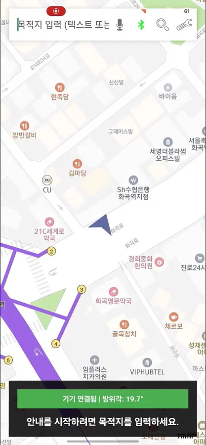
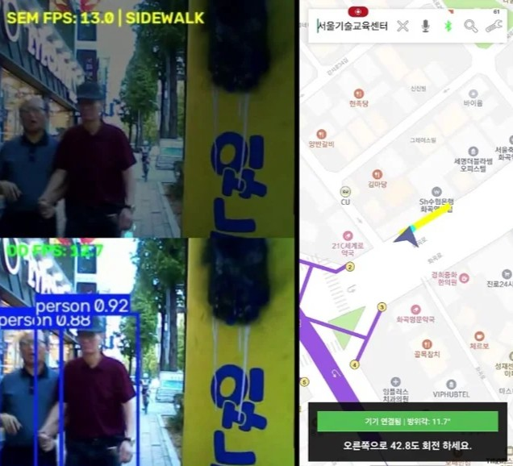

Direction Guidance
- IMU Yaw 기반 사용자 방향 계산
- TMAP 경로와 진행 방향 비교
- 직진과 회전 안내 판단
05 - WEARABLE SYSTEM
TMAP 경로와 IMU 방향, 장애물 정보를 진동으로 전달하는 보행 보조 시스템
WHAT I DID
PROJECT IMAGES

목적지를 입력하고 이동 경로를 생성한 Android 화면

인식 결과와 앱의 방향 정보를 진동 피드백으로 연결한 화면
SYSTEM FLOW
경로와 목적지
안내 정보 전송
상태와 우선순위 처리
방향과 장애물 정보
좌우 진동 안내
PROBLEM SOLVING
Android와 Raspberry Pi 사이의 BLE 연결이 불안정해 안내 정보 전달이 중단됐습니다.
통신 방식을 Bluetooth Classic으로 변경했습니다. 연결 상태를 확인하며 명령을 주고받도록 구조를 단순화했습니다.
앱과 Raspberry Pi 사이의 방향 안내 데이터 연동을 확인했습니다.